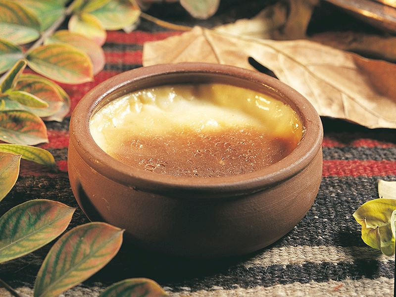
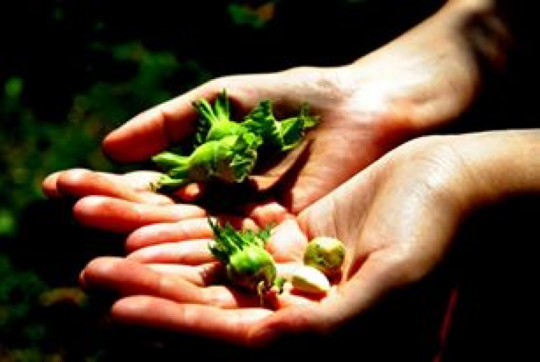
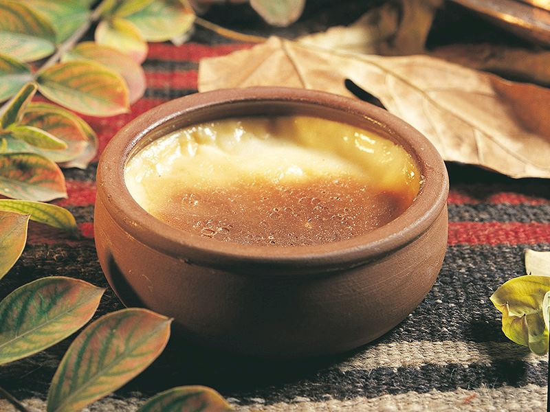
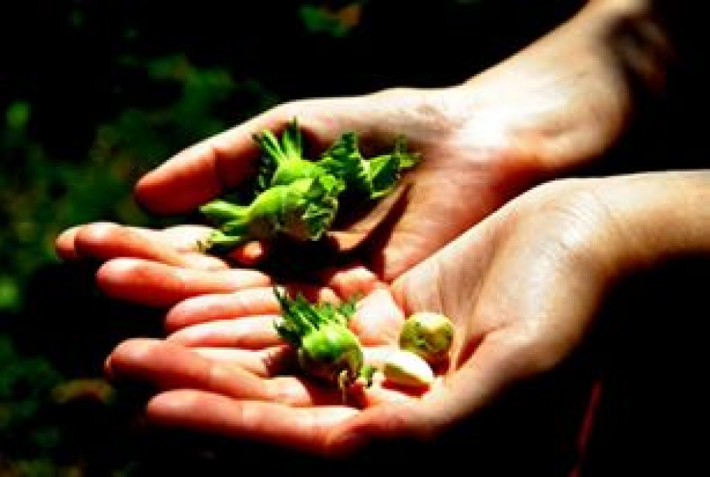

Fasülye Turşusu
Turşusunu yapmadığımız neredeyse sebze ve meyve yok gibi. Özellikle Karadeniz’de fasulye turşusu vazgeçilmezdir. Soğanla kavurarak tüketilen fasulye turşusunu ister 5 çaylarında ister ana yemek olarak tüketin. Az malzemeyle hazırlaması da oldukça kolaydır.
İşte Karadenizli kadınların yıllardır kullandıkları fasulye turşusu yapma yöntemi.

Simit Tiridi
"Tiridine bandım" isimli Kastamonu türküsüne adını veren "simit tiridi", kenti ziyaret eden yerli ve yabancı turistlerin vazgeçemediği lezzetlerin başında geliyor. Yemek,Kastamonulu ustalar tarafından geleneksel tarifiyle yapılmaya devam ediliyor. Kentte 45 yıldır kendisine ait lokanta tirit yapan usta Hasan Köse AA muhabirine yaptığı açıklamada, Kastamonu'nun eski bir yerleşim yeri olduğunu, simit tiridinin de yaklaşık 400 yıllık geçmişi bulunduğunu söyledi.Fındık
Ülkemizde yoğun olarak Karadeniz Bölgesinde yetişmekte olan fındık Huşgiller ailesinin ılıman iklimleri seven üyesidir. Fındık Ağacının meyvesi sert bir kabuk içerisindedir. Fındık bol miktarda yararlı yağlar ve nişasta barındırır.
Demir, potasyum, kalsiyum ve magnezyumun yanı sıra çinko bakımından da zengindir. Ayrıca içeriğinde E vitamini ile protein, Omega 3 barındırmaktadır.